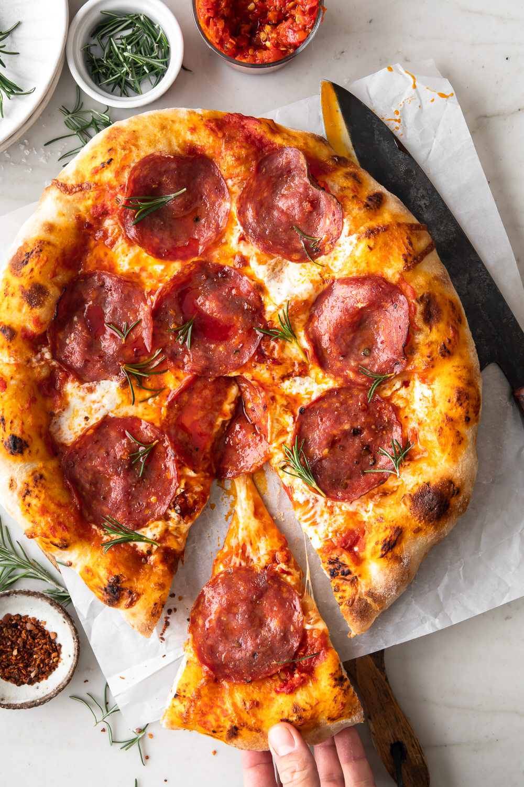

Pizza

This is a great example of a pepperoni pizza!
This recipe is very simple, but it does require some patience!
Having a pizza oven isn't even required, everything can be done in your cast iron pan!
Ingredients
- Pizza Dough (homemade or store-bought)
- ⅓ cup Pizza Sauce
- 4 oz. Mozzarella Cheese, grated
- 16 slices Pepperoni
- 4 oz Fresh Mozzarella Balls, drained, halved
- ½ small Red Onion, thinly sliced
- 2 Sweet Peppers, seeded, thinly sliced
- Pinch of Salt and Ground Black Pepper
- 8 Fresh Basil Leaves, torn
- Extra-virgin Olive Oil (for brushing dough)
Steps
- Roll out the dough on a lightly floured surface. Use a rolling pin to roll out the dough into a 12” diameter or as big as you want, depending on how thick you want the pizza crust.
- Sprinkle a tiny bit of semolina over a pizza pan or cast-iron skillet for an easy release.
- Place the dough on a pizza pan. The dough might retract. Oil the tip of your fingers and gently stretch the dough pulling outwards towards you. Use the tip of a fork to prick the dough slightly, careful not to poke through the dough.
- Brush the edge of the dough with extra virgin olive oil.
- Next, preheat the oven to 450°F.
- Assemble the pizza using the back of a spoon. Spread the pizza sauce onto the dough, leaving about an inch of crust around the edges. Add a tablespoon at a time.
- Add the pepperoni, top with the fresh and shredded mozzarella (pat dry any excess liquid). Add the onion and peppers. Sprinkle a pinch of salt and black pepper.
- Bake for 12 -15 minutes or until the crust is browned. Remove from the oven and finish it off with fresh basil leaves. Drizzle with a tiny bit of extra-virgin olive oil.
- Slice and serve.